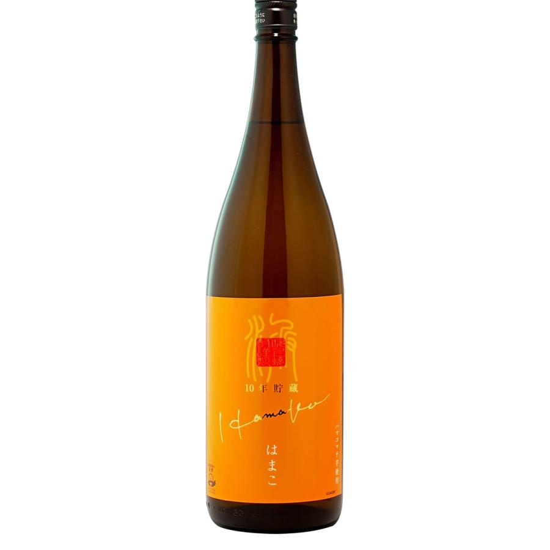

音楽酒場
渋谷 はまこおかえり渋谷

焼酎
-
はまこ 30度 720ml 5,000yen
ハマコマチ芋を黒麹で醸した10年貯蔵古酒です。
柑橘系の爽やかな香りとスッキリしたのど越し長期熟成によるまろやかな味わいをお楽しみいただけます
●南薩摩産の希少品種「ハマコマチ」芋を原料に黒麹で醸し10年以上の歳月をかけじっくりと熟成させた本格芋焼酎です。
「ハマコマチ」由来の柑橘系の爽やかな香りとスッキリしたのど越し、10年貯蔵の熟成効果がもたらす、まろやかな味わいをお楽しみいただけます。
まろやかなシッカリした旨み甘みのある味わいに仕上がっていて、スッキリした喉越しでとても飲みやすいです。
●ロック、水割り、炭酸割り・・がオススメです。
ウィスキー
-
サントリー シングルモルト ウイスキー 山崎 43度 700ml 15,000yen
多種多様な原酒の中から「ワイン樽貯蔵モルト」を使用し、「山崎」を語る上で欠かすことのできない「ミズナラ樽貯蔵モルト」など複数の原酒とヴァッティングしました。それぞれの個性が重なり合うことで生まれた、やわらかく華やかな香り、甘くなめらかな味わいが特長です。ロック、ストレート、水割りもおすすめですが、飲食店で人気のハイボールも是非お楽しみ下さい。
What's Newお知らせ
- 2024/02/13
- 臨時休業やニュースで書き込みがあれば編集します。
- 2024/02/12
- HP開設
- 2022/02/12
- 開店
↑